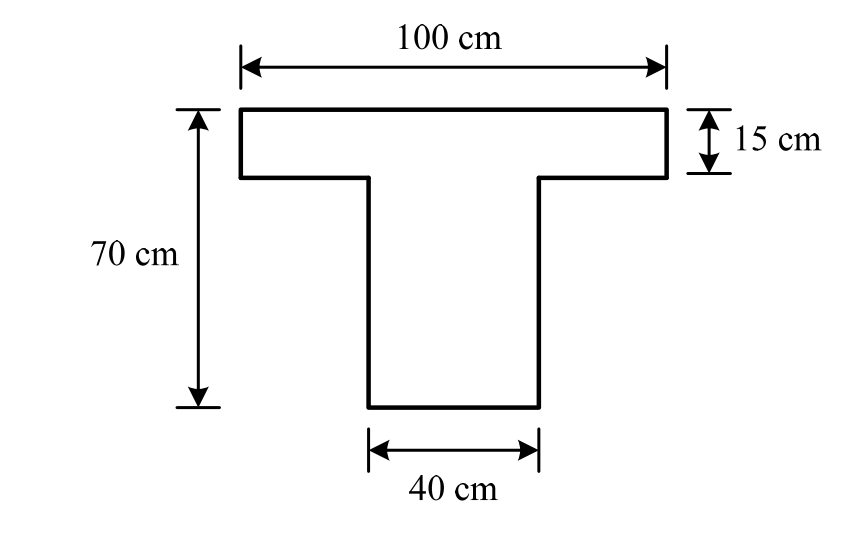
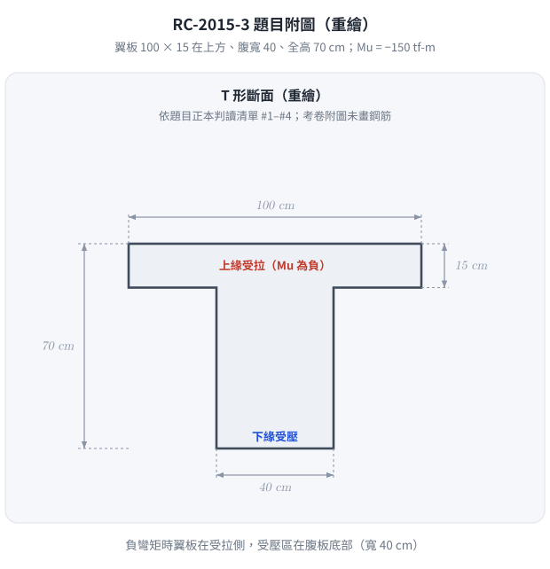
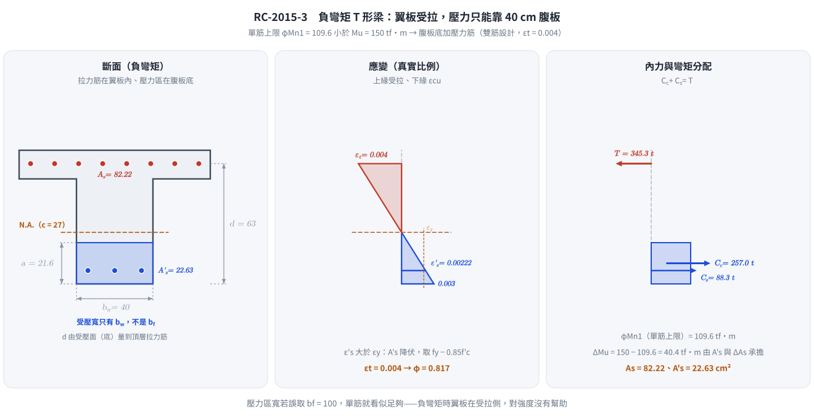

📄 題目正本：考卷原文・附圖・判讀清單（已確認）
RC-2015-3 題目正本
本檔只記錄考卷上寫了什麼、圖上畫了什麼，不含任何解法。解析見同資料夾
RC-2015-3.md。
判讀清單已經使用者確認（凍結）；本檔原則上不再修改（改動須回考卷原圖並記 log）。
| 項目 | 內容 |
|---|---|
| 考卷 | raw/exams/RC-2015_鋼筋混凝土設計與預力.pdf 第 1 頁（全一張之正面），第三題 |
| 考年 | 民國 104 年（2015） |
| 配分 | 20 分 |
| 附圖 | RC-2015-3-fig-1.png（T 型梁斷面） |
| 判讀狀態 | 已確認（2026-11-12 使用者確認；轉錄 2026-11-12，PyMuPDF 110 dpi 全頁目視＋抽出文字核對；盲讀後才比對既有解析） |
1. 考卷原文（逐字）
三、下圖所示 T 型 R.C.梁斷面，$b_f$=100 cm，$t_f$=15 cm，$b_w$=40 cm，h=70 cm，d'=7 cm，材料強度 f'c=350 kgf/cm²，fy=4200 kgf/cm²，請設計此梁斷面在承受極限負彎矩 Mu=-150 tf-m 時之抗彎鋼筋。（20 分）
2. 考卷給的公式、附表與參數
- 題文數值：$b_f=100$、$t_f=15$、$b_w=40$、$h=70$、$d'=7$ cm；$f'_c=350$、$f_y=4200$ kgf/cm²；$M_u=-150$ tf-m。
- 同頁第二題附有鋼筋斷面積表（#7 3.971、#8 5.067、#9 6.469、#10 8.143 cm²），版面位於第二題下方。
- 沒有給：$d$（題文與圖都只有 $d'$）、$\phi$、$\beta_1$、$E_s$、鋼筋號數限制、保護層。
- 卷首注意事項：㈠可以使用電子計算器；㈡不必抄題。
3. 附圖

圖面文字照錄：100 cm、15 cm、70 cm、40 cm。
4. 判讀清單
「把握」標不確定者請優先確認；解讀類項目（題目用字的意思）另標「解讀」。
| # | 項目 | 判讀 | 圖上／題文依據 | 把握 |
|---|---|---|---|---|
| 1 | 翼板 | 寬 100 cm、厚 15 cm，在斷面上方 | 圖：100 cm 尺寸線對齊翼板兩側、15 cm 夾翼板頂底面 | 確定 |
| 2 | 腹板 | 寬 40 cm | 圖底 40 cm 尺寸線 | 確定 |
| 3 | 全高 | 70 cm（翼板頂到腹板底） | 左側 70 cm 尺寸線 | 確定 |
| 4 | 彎矩方向 | 負彎矩：上緣（翼板）受拉、下緣（腹板底）受壓，壓力區寬度為 $b_w=40$ cm | 題文「負彎矩 Mu=-150 tf-m」 | 確定 |
| 5 | $d'$ 的意義 | 7 cm 為受拉側（頂面）到拉力筋形心的距離，故 $d = 70-7 = 63$ cm，由腹板底量起 | 題文只給 $d'$、未給 $d$；負彎矩拉力筋在頂部 | 確定（解讀） |
| 6 | 鋼筋 | 圖上未畫鋼筋；拉力筋（及是否需壓力筋）由考生設計 | 圖 | 確定 |
| 7 | 考卷沒有給 | $d$、$\phi$、$\beta_1$、$E_s$、鋼筋號數 | 全題 | 確定 |
轉錄：2026-11-12（RC-U1-1 題目正本推廣・批 1）
確認：2026-11-12 使用者確認（RC-U1-1 題目正本推廣・批 1，關卡一）
考題編號：RC-2015-3
主分類： RC-U1-1 RC 梁彎矩強度分析與設計
副分類： （無）
設計法： USD強度設計法
標籤： T型梁 負彎矩 雙筋梁 腹板矩形等效 壓縮區在腹板 εt=0.004限制 分步設計法
1. 題目（考卷原文見題目正本）
考卷原文、公式／附表、附圖與判讀清單（已確認）見
RC-2015-3-problem.md。本節只列解題時最容易讀錯的地方與本解使用的記號；題意以題目正本為準。

重繪自考卷附圖，依題目正本判讀清單 #1–#4；負彎矩時翼板在受拉側，受壓區在寬 40 cm 的腹板底部。
常見誤讀
| 項目 | 正確判讀 | 常見誤讀 |
|---|---|---|
| 受壓區 | 負彎矩：上緣（翼板）受拉、下緣受壓，壓力區寬 $b_w=40$ cm（判讀 #4） | 照正彎矩 T 形梁讓翼板受壓 |
| $d'$ 與 $d$ | $d'=7$ cm 為頂面到拉力筋形心，$d = 70-7 = 63$ cm（判讀 #5） | 把 $d'$ 當保護層淨距 |
| 所求 | 設計「抗彎鋼筋」；是否需要壓力筋是解題結果，不是題目條件 | 題目要求雙筋 |
| 考卷沒給 | $d$、$\phi$、$\beta_1$、$E_s$、鋼筋號數（判讀 #7）；同頁第二題附鋼筋面積表 | — |
本解記號： $b_f=100$、$t_f=15$、$b_w=40$、$h=70$ cm；$d=63$ cm（由頂面量）；若需壓力筋，本解假設其形心距底面亦為 7 cm（考卷未給）；$A_s$＝上緣拉力筋、$A'_s$＝下緣壓力筋。
2. 考題核心精神與出題者意圖（Core Concepts & Examiner's Intent）
核心觀念： T 型梁在負彎矩下，壓力區在腹板（下方），翼板在拉力側（不參與受壓）。此時設計等效為矩形梁 b = bw = 40 cm。由於 Mu = 150 tf·m 超過單筋矩形梁（b=40, d=63）的最大設計彎矩，需設計雙筋梁，在底面加入壓力鋼筋 A's。
出題者意圖：
- 測驗考生是否知道「T 型梁負彎矩 = 矩形腹板受壓」的關鍵判斷
- 測驗雙筋梁設計流程（分步法：先單筋設計到 εt = 0.004 上限，剩餘彎矩由壓力鋼筋承擔）
- 測驗 φ 值於 εt = 0.004 的正確計算
3. 解題戰略地圖與陷阱分析（Strategic Roadmap & Trap Analysis）
關鍵判斷：負彎矩下的等效壓縮區
Mu = -150 tf·m（負彎矩）
→ 翼板在上方（拉力側）→ 不貢獻壓力
→ 壓力區：腹板（矩形，b = bw = 40 cm）
→ 等效為矩形梁：b = 40 cm，d = 63 cm
作戰計畫（三步驟）：
Step 1 確認等效斷面（b = bw = 40 cm）
計算單筋最大彎矩 φMn,1（εt = 0.004）
→ 109.6 tf·m < Mu = 150 tf·m → 需雙筋
↓
Step 2 計算壓力鋼筋 A's（由剩餘彎矩設計）
確認壓力鋼筋降伏（ε's > εy）
↓
Step 3 計算總拉力鋼筋 As = As,1 + ΔAs
驗算 φMn ≥ Mu
關鍵陷阱（四個）：
| # | 陷阱 | 正確做法 |
|---|---|---|
| ① | 負彎矩仍用全翼板寬 100 cm 計算壓力 | 壓力在腹板，b = bw = 40 cm |
| ② | 中性軸在翼板（正彎矩邏輯套用負彎矩） | 負彎矩下翼板在拉力側，壓力區是腹板 |
| ③ | 壓力鋼筋淨力未扣混凝土占位 | $C'_s = A'_s(f'_s - 0.85f'_c)$ |
| ④ | φ = 0.9（誤以為拉力控制） | εt = 0.004 在過渡區，φ = 0.817 |
3.5 變數層次分析（Variable Hierarchy Analysis）
複習提示：第一次解題後，在每個卡住的知識點旁標記
⚠；第二次複習時只看有⚠的項目。
最終目標
設計 T 型梁（負彎矩下等效矩形腹板）的雙筋斷面：求 As（拉力，上方）與 A's（壓力，下方）。
本題關鍵公式（依計算順序）
$$\text{Step 1:}\quad c_{\max} = \frac{3}{7}\,d,\quad a_{\max} = \beta_1\,\boxed{c_{\max}}$$
$$\text{Step 2:}\quad \varphi M_{n,1} = \varphi\,C_c\!\left(d - \tfrac{a_{\max}}{2}\right),\quad C_c = 0.85\,f'_c\,\boxed{a_{\max}}\,b_w$$
$$\text{Step 3:}\quad \Delta M_u = M_u - \varphi M_{n,1}$$
$$\text{Step 4:}\quad A'_s = \frac{\Delta M_u}{\varphi\,(f'_y - 0.85f'_c)(d - d')}$$
$$\text{Step 5:}\quad A_s = \underbrace{\frac{C_c}{f_y}}_{A_{s,1}} + \underbrace{\frac{A'_s(f'_y - 0.85f'_c)}{f_y}}_{\Delta A_s}$$
L1：題目直接給定
| 符號 | 數值 | 說明 |
|---|---|---|
| $b_f, t_f$ | 100, 15 cm | 翼板幾何（負彎矩時在拉力側） |
| $b_w$ | 40 cm | 腹板寬（負彎矩時的壓縮寬度） |
| $h$ | 70 cm | 梁總深 |
| $d'$ | 7 cm | 從受力面到鋼筋形心距離 |
| $d$ | 63 cm | 有效深度（70−7） |
| $f'_c, f_y$ | 350, 4200 kgf/cm² | 材料強度 |
| $M_u$ | 150 tf·m（取絕對值） | 負彎矩設計值 |
L2：需知識點推導
▎負彎矩等效斷面判斷
| 符號 | 公式／來源 | 卡關? |
|---|---|---|
| 等效壓縮寬度 | $b_w = 40$ cm（翼板在拉力側，不貢獻壓力） | |
| $\beta_1$ | $0.85 - 0.05 \times (350-280)/70 = 0.80$ |
▎單筋最大彎矩（Step 1-2）
| 符號 | 公式／來源 | 卡關? |
|---|---|---|
| $c_{\max}$ | $3d/7 = 27$ cm | |
| $a_{\max}$ | $0.80 \times 27 = 21.6$ cm | |
| $C_c$ | $0.85 \times 350 \times 21.6 \times 40$ | |
| $\varphi M_{n,1}$ | $0.817 \times C_c(d - a_{\max}/2)$ |
▎壓力鋼筋設計（Step 3-5）
| 符號 | 公式／來源 | 卡關? |
|---|---|---|
| $\Delta M_u$ | $M_u - \varphi M_{n,1}$ | |
| $\varepsilon'_s$ | $0.003(c_{\max} - d')/c_{\max}$（驗算是否降伏） | |
| $A'_s$ | $\Delta M_u / [\varphi(f_y - 0.85f'_c)(d-d')]$ | |
| $\Delta A_s$ | $A'_s(f_y - 0.85f'_c)/f_y$（對應壓力鋼筋的額外拉力鋼筋） | |
| $A_s$ | $C_c/f_y + \Delta A_s$ |
L3：深層知識（不懂就卡住）
| 知識點 | 說明 | 卡關? |
|---|---|---|
| 負彎矩下 T 型梁 = 矩形腹板 | 翼板在拉力側，混凝土不計拉力，壓縮區退化為 b = bw 的矩形梁 | |
| 雙筋梁「分步設計法」 | Step 1：單筋承擔到最大（εt=0.004），Step 2：剩餘由壓力鋼筋承擔，總 c 不變 | |
| 壓力鋼筋降伏驗算 | 加入 A's 後，NA 不變（c=27 cm），故 ε's 不變，需再確認 ε's ≥ εy | |
| 為何 c 不變 | 分步設計法中，壓力鋼筋提供額外力矩，NA 保持在 c=27 cm，εt 仍為 0.004 |
4. 步驟化詳細計算過程（Step-by-Step Detailed Calculation）
Step 0：確認負彎矩下之等效斷面
策略關鍵： 負彎矩 → 翼板（上）在拉力側 → 壓力區僅腹板（矩形，b = bw = 40 cm）。
$$\beta_1 = 0.85 - 0.05 \times \frac{350-280}{70} = \boxed{0.80},\quad \varepsilon_y = \frac{4200}{2{,}040{,}000} = 0.00206$$
等效計算斷面：$b = b_w = 40$ cm，$d = 63$ cm，$d' = 7$ cm
Step 1：單筋最大彎矩（εt = 0.004 控制）
$$c_{\max} = \frac{3}{7} \times 63 = \boxed{27 \text{ cm}},\quad a_{\max} = 0.80 \times 27 = \boxed{21.6 \text{ cm}}$$
$$C_c = 0.85 \times 350 \times 21.6 \times 40 = 297.5 \times 21.6 \times 40 = \boxed{257{,}040 \text{ kgf}}$$
$$\varphi = 0.65 + \frac{0.004-0.002}{0.003} \times 0.25 = 0.65 + 0.167 = \boxed{0.817}$$
$$\varphi M_{n,1} = 0.817 \times 257{,}040 \times \left(63 - \frac{21.6}{2}\right) = 0.817 \times 257{,}040 \times 52.2$$
$$= 0.817 \times 13{,}417{,}488 = 10{,}962{,}087 \text{ kgf·cm} = \boxed{109.6 \text{ tf·m}}$$
判斷： $\varphi M_{n,1} = 109.6$ tf·m $< M_u = 150$ tf·m → 需加壓力鋼筋（雙筋梁設計）
Step 2：壓力鋼筋 A's 設計
剩餘設計彎矩：
$$\Delta M_u = 150.0 - 109.6 = 40.4 \text{ tf·m} = 4{,}040{,}000 \text{ kgf·cm}$$
先確認壓力鋼筋是否降伏（c = 27 cm 不變）：
$$\varepsilon'_s = 0.003 \times \frac{c_{\max} - d'}{c_{\max}} = 0.003 \times \frac{27 - 7}{27} = 0.003 \times \frac{20}{27} = 0.00222 > \varepsilon_y = 0.00206$$
$$\Rightarrow \boxed{f'_s = f_y = 4{,}200 \text{ kgf/cm}^2 \text{（壓力鋼筋降伏）}}$$
由壓力鋼筋力矩求 A's：
$$\varphi \cdot A'_s \cdot (f_y - 0.85f'_c) \cdot (d - d') = \Delta M_u$$
$$0.817 \times A'_s \times (4{,}200 - 297.5) \times (63 - 7) = 4{,}040{,}000$$
$$0.817 \times A'_s \times 3{,}902.5 \times 56 = 4{,}040{,}000$$
$$0.817 \times 218{,}540 \times A'_s = 4{,}040{,}000$$
$$178{,}547 \times A'_s = 4{,}040{,}000$$
$$\boxed{A'_s = 22.63 \text{ cm}^2 \text{（壓力鋼筋，位於底面以上 } d' = 7 \text{ cm）}}$$
Step 3：總拉力鋼筋 As
對應單筋部分之拉力鋼筋：
$$A_{s,1} = \frac{C_c}{f_y} = \frac{257{,}040}{4{,}200} = 61.20 \text{ cm}^2$$
對應壓力鋼筋之額外拉力鋼筋（力平衡）：
$$\Delta A_s = \frac{A'_s \cdot (f_y - 0.85f'_c)}{f_y} = \frac{22.63 \times 3{,}902.5}{4{,}200} = \frac{88{,}294}{4{,}200} = 21.02 \text{ cm}^2$$
$$\boxed{A_s = A_{s,1} + \Delta A_s = 61.20 + 21.02 = 82.22 \text{ cm}^2 \text{（拉力鋼筋，位於頂面以下 } d' = 7 \text{ cm）}}$$
Step 4：驗算
力平衡：
$$C_c + A'_s(f_y - 0.85f'_c) = 257{,}040 + 22.63 \times 3{,}902.5 = 257{,}040 + 88{,}294 = 345{,}334 \text{ kgf}$$
$$A_s \times f_y = 82.22 \times 4{,}200 = 345{,}324 \text{ kgf} \approx 345{,}334 \quad \checkmark$$
設計彎矩：
$$\varphi M_n = 0.817 \times \left[257{,}040 \times 52.2 + 22.63 \times 3{,}902.5 \times 56\right]$$
$$= 0.817 \times \left[13{,}417{,}488 + 4{,}945{,}487\right] = 0.817 \times 18{,}362{,}975$$
$$= \boxed{15{,}002{,}551 \text{ kgf·cm} \approx 150.0 \text{ tf·m} \geq M_u = 150 \text{ tf·m} \quad \checkmark}$$

圖 2 負彎矩時翼板在受拉側，壓力只能靠 40 cm 寬的腹板底部，$d$ 也要由受壓面（底面）量到頂層拉力筋。這張圖攔下三個錯：壓力區寬誤取 $b_f = 100$（單筋看似就夠）、拉力筋畫在底部，以及沒驗算壓力筋是否降伏。
設計結果彙整
| 鋼筋 | 面積 | 位置 | 說明 |
|---|---|---|---|
| 拉力鋼筋 $A_s$ | 82.22 cm² | 頂部，$d' = 7$ cm 以下 | 分佈於頂部翼板區 |
| 壓力鋼筋 $A'_s$ | 22.63 cm² | 底部，$d' = 7$ cm 以上 | 位於腹板底端 |
| 中性軸深度 $c$ | 27 cm | — | $\varepsilon_t = 0.004$，過渡區 |
| 強度折減係數 $\varphi$ | 0.817 | — | $\varepsilon_t = 0.004$ |
5. 關鍵爭議點與進階探討（Critical Issues & Advanced Discussion）
爭議 1：負彎矩時翼板可否計入受壓？
對於正彎矩（翼板受壓），T 型梁的有效壓縮翼板寬度按規範取值，可大幅增加壓縮面積。
對於負彎矩（翼板受拉），翼板不計入壓縮，壓縮區僅為矩形腹板（b = bw），設計彎矩容量大幅縮小。
爭議 2：拉力鋼筋 As = 82.22 cm² 的實際配置
負彎矩的拉力鋼筋通常分佈在頂部（連續梁支承區），包含：
- 翼板拉力筋： 分布於翼板寬度（bf = 100 cm）內，承擔翼板拉力
- ACI 規定：在有效翼板寬度範圍內分佈鋼筋（細部規定見 ACI 318-19 §9.7.3）
實際分配時，82.22 cm² 的拉力筋應均勻分布在頂部翼板區，以確保有效承拉。
單筋設計的容量上限（對照）
| 設計方式 | 壓縮寬度 | 最大 φMn（εt=0.004） |
|---|---|---|
| 負彎矩（腹板受壓） | bw = 40 cm | 109.6 tf·m |
| 正彎矩（翼板受壓，假設 a ≤ tf） | bf = 100 cm | >> 150 tf·m |
T 型梁在正彎矩下容量遠大於負彎矩，這是連續梁設計中的典型不對稱性。
修正日期：2026-11-12（§1 改為指向題目正本，重繪題目附圖 figs/RC-2015-3-fig-1-problem.svg；刪除「（As 與 A's）」「從各受力面量起」加字）
圖解補繪：2026-11-13（圖 2 負彎矩斷面／應變／內力三聯圖；向量圖，腳本 gen_RC-2015-3.py，可重跑，檔尾對 §4 公佈值 assert；非勘誤）